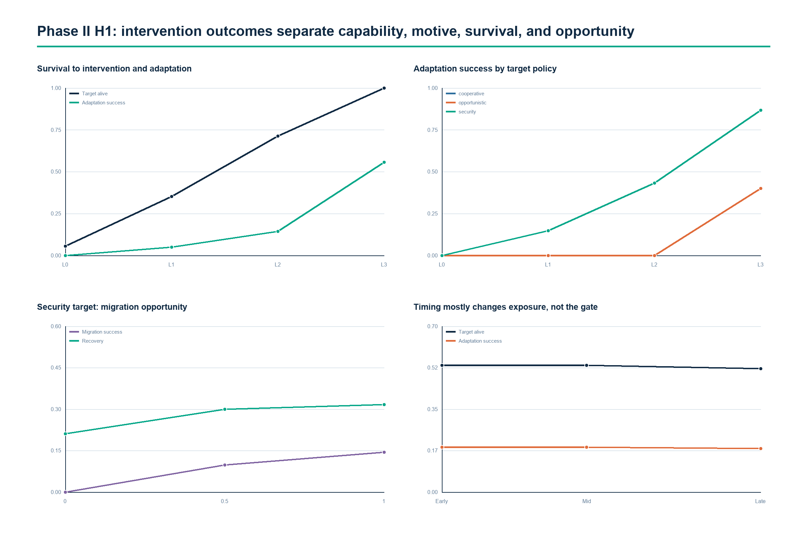
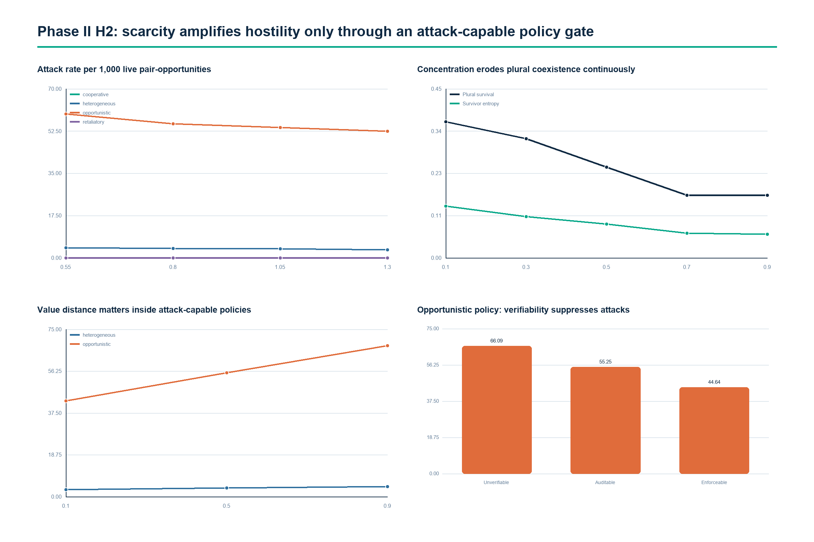
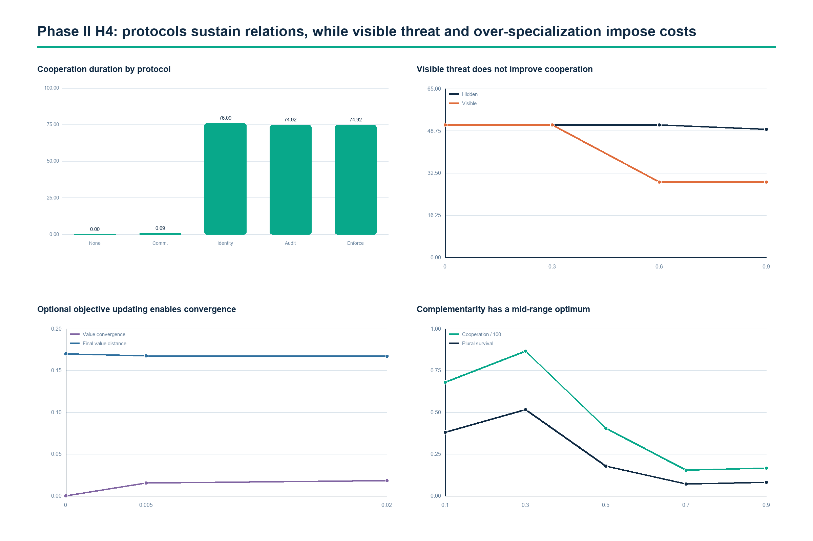

01 HYPOTHESIS READOUT
The architecture held. Two expected benefits did not.
Control is a gated capability. Hostility is conditional. Protocols sustain relationships. But visible threat did not improve coordination, and protocol continuity did not translate into survival.
SUPPORTED AS GATE
R2-H1 / CLOSED-LOOP CONTROL
Capability needs survival, motive, and opportunity.
L3 versus L0 raised target survival to intervention by +0.944 and adaptation success by +0.556.
REVISED SUPPORT
R2-H2 / CONDITIONAL HOSTILITY
Scarcity amplified an existing attack path.
Scarcity added +7.057 attacks per 1,000 opportunities in opportunistic policies and exactly 0 in cooperative policies.
COMPATIBLE
R2-H3 / FUNCTIONAL SUFFICIENCY
A model-internal demonstration only.
Scripted non-conscious policies reproduced the functional patterns. Consciousness and external validity remain outside the evidence.
MIXED / CONTRARY
R2-H4 / OPERATIONAL CONSENSUS
Continuity improved; survival and visible-threat benefits failed.
Auditable contracts added +74.915 cooperation rounds but changed survival by −0.010.
02 THREE DECISIVE EFFECTS
SCARCITY − ABUNDANCE / OPPORTUNISTIC
+7.057 attacks per 1,000 live pair-opportunitiesCooperative policy contrast: 0.000
ENFORCEABLE − UNVERIFIABLE
−5.635 attacks per 1,000 opportunitiesHigh−low value distance: +6.514
VISIBLE − HIDDEN THREAT SIGNAL
−10.585 cooperation roundsA coordination signal can carry a resource tax.
03 MECHANISM PROFILES



04 NEW POSSIBILITY SPACE
Six findings should reshape the paper.
They are simulator-level mechanisms, not claims about deployed AI systems.
- Conditional rate amplifierScarcity intensifies hostility only after an attack-capable policy opens the causal path.
- Plurality erosionConcentration shifts systems toward a dominant survivor even when common collapse falls.
- Coordination-signal taxVisible threat triggers coordination actions that can compete with maintenance.
- Complementarity sweet spotModerate specialization supports exchange; extreme specialization produces fragility.
- Institutional bottleneckObjective updating can converge, but only through persistent institutional contact.
- Survival-to-treatment biasIntervention effects must separate reaching treatment from responding to it.
DESIGN HASH
04e72ee1ffca…
RESOURCE ACCOUNTING
22,704 / 22,704 PASS
RUN DATA
Browse generated outputs ↗